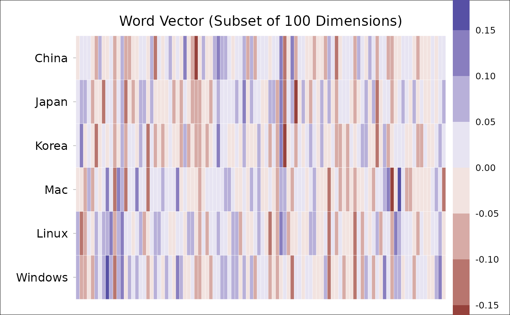

Extract word vector(s), using either a list of words or a regular expression.
Usage
get_wordvec(
data,
words = NULL,
pattern = NULL,
plot = FALSE,
plot.dims = NULL,
plot.step = 0.05,
plot.border = "white"
)Arguments
- data
A
wordvec(data.table) orembed(matrix), seedata_wordvec_load.- words
[Option 1] Character string(s).
- pattern
[Option 2] Regular expression (see
str_subset). If neitherwordsnorpatternare specified (i.e., both areNULL), then all words in the data will be extracted.- plot
Generate a plot to illustrate the word vectors? Defaults to
FALSE.- plot.dims
Dimensions to be plotted (e.g.,
1:100). Defaults toNULL(plot all dimensions).- plot.step
Step for value breaks. Defaults to
0.05.- plot.border
Color of tile border. Defaults to
"white". To remove the border color, setplot.border=NA.
Download
Download pre-trained word vectors data (.RData):
https://psychbruce.github.io/WordVector_RData.pdf
Examples
d = as_embed(demodata, normalize=TRUE)
get_wordvec(d, c("China", "Japan", "Korea"))
#> China Japan Korea
#> <num> <num> <num>
#> 1: -0.02697318 0.018329469 0.033778005
#> 2: 0.04999036 0.090237829 0.133294179
#> 3: 0.04010034 0.060275982 -0.021963288
#> 4: 0.03056975 0.030490640 0.001675763
#> 5: -0.04711339 -0.095877693 -0.014011015
#> ---
#> 296: -0.01393625 -0.087418077 -0.072705831
#> 297: -0.06761304 -0.105042608 -0.115117643
#> 298: 0.05070960 0.048291315 0.015374394
#> 299: 0.03452576 0.002103985 -0.043017655
#> 300: -0.02931099 0.008636121 0.077552886
get_wordvec(d, cc(" China, Japan; Korea "))
#> China Japan Korea
#> <num> <num> <num>
#> 1: -0.02697318 0.018329469 0.033778005
#> 2: 0.04999036 0.090237829 0.133294179
#> 3: 0.04010034 0.060275982 -0.021963288
#> 4: 0.03056975 0.030490640 0.001675763
#> 5: -0.04711339 -0.095877693 -0.014011015
#> ---
#> 296: -0.01393625 -0.087418077 -0.072705831
#> 297: -0.06761304 -0.105042608 -0.115117643
#> 298: 0.05070960 0.048291315 0.015374394
#> 299: 0.03452576 0.002103985 -0.043017655
#> 300: -0.02931099 0.008636121 0.077552886
## specify `pattern`:
get_wordvec(d, pattern="Chin[ae]|Japan|Korea")
#> 6 words matched...
#> China Japan Chinese Japanese Korean Korea
#> <num> <num> <num> <num> <num> <num>
#> 1: -0.02697318 0.018329469 -0.04985132 0.003658937 0.02635512 0.033778005
#> 2: 0.04999036 0.090237829 0.04593451 0.091899336 0.11745195 0.133294179
#> 3: 0.04010034 0.060275982 0.07940573 0.062968012 0.03810029 -0.021963288
#> 4: 0.03056975 0.030490640 0.02581589 0.029782102 0.02850357 0.001675763
#> 5: -0.04711339 -0.095877693 -0.03204736 -0.093941412 -0.05127785 -0.014011015
#> ---
#> 296: -0.01393625 -0.087418077 0.04593451 -0.055820224 -0.05213705 -0.072705831
#> 297: -0.06761304 -0.105042608 -0.06907951 -0.119128757 -0.08479435 -0.115117643
#> 298: 0.05070960 0.048291315 0.06694317 0.074540472 0.02363348 0.015374394
#> 299: 0.03452576 0.002103985 0.05448025 0.001999554 -0.05614764 -0.043017655
#> 300: -0.02931099 0.008636121 -0.03275947 0.009104821 0.03867319 0.077552886
## plot word vectors:
get_wordvec(d, cc("China, Japan, Korea,
Mac, Linux, Windows"),
plot=TRUE, plot.dims=1:100)

#> China Japan Korea Mac Linux
#> <num> <num> <num> <num> <num>
#> 1: -0.02697318 0.018329469 0.033778005 -0.017270569 0.068922067
#> 2: 0.04999036 0.090237829 0.133294179 -0.012575617 -0.118698961
#> 3: 0.04010034 0.060275982 -0.021963288 -0.052985444 -0.071656892
#> 4: 0.03056975 0.030490640 0.001675763 0.078136677 0.030358376
#> 5: -0.04711339 -0.095877693 -0.014011015 -0.057009737 -0.045400893
#> ---
#> 296: -0.01393625 -0.087418077 -0.072705831 -0.088532396 -0.001282133
#> 297: -0.06761304 -0.105042608 -0.115117643 -0.063716664 0.025572363
#> 298: 0.05070960 0.048291315 0.015374394 -0.005407505 0.072751102
#> 299: 0.03452576 0.002103985 -0.043017655 -0.016767489 -0.063451858
#> 300: -0.02931099 0.008636121 0.077552886 0.040912906 0.056341033
#> Windows
#> <num>
#> 1: 0.0596512714
#> 2: -0.0797136210
#> 3: -0.0818534443
#> 4: -0.0143777935
#> 5: -0.0738285592
#> ---
#> 296: 0.0235396994
#> 297: 0.0005308471
#> 298: 0.0098973674
#> 299: 0.0572438332
#> 300: 0.1321425780
## a more complex example:
words = cc("
China
Chinese
Japan
Japanese
good
bad
great
terrible
morning
evening
king
queen
man
woman
he
she
cat
dog
")
dt = get_wordvec(
d, words,
plot=TRUE,
plot.dims=1:100,
plot.step=0.06)
# if you want to change something:
attr(dt, "ggplot") +
scale_fill_viridis_b(n.breaks=10, show.limits=TRUE) +
theme(legend.key.height=unit(0.1, "npc"))
#> Scale for fill is already present.
#> Adding another scale for fill, which will replace the existing scale.
# or to save the plot:
ggsave(attr(dt, "ggplot"),
filename="wordvecs.png",
width=8, height=5, dpi=500)
unlink("wordvecs.png") # delete file for code check